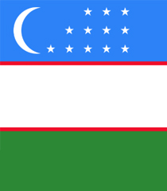
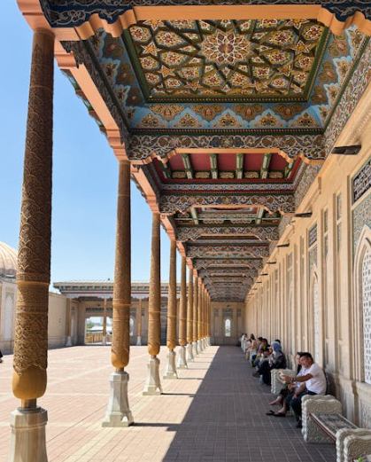

Samarkand
950.000 Resident
Uzbekistan
39.6508° N, 66.9654° E
Get More Information

Smarkand
View all citiesSamarkand is a city in Uzbekistan known for its mosques and mausoleums. It's on the Silk Road, the ancient trade route linking China to the Mediterranean. Prominent landmarks include the Registan, a plaza bordered by 3 ornate, majolica-covered madrassas dating to the 15th and 17th centuries, and Gur-e-Amir, the towering tomb of Timur (Tamerlane), founder of the Timurid Empire.
Images Credit
Bandung
Asia Africa
City Network
Quick Link
Get in touch
Need Information?
+62 81318667479
bapperida@bandung.go.id
© BAACN - All rights reserved